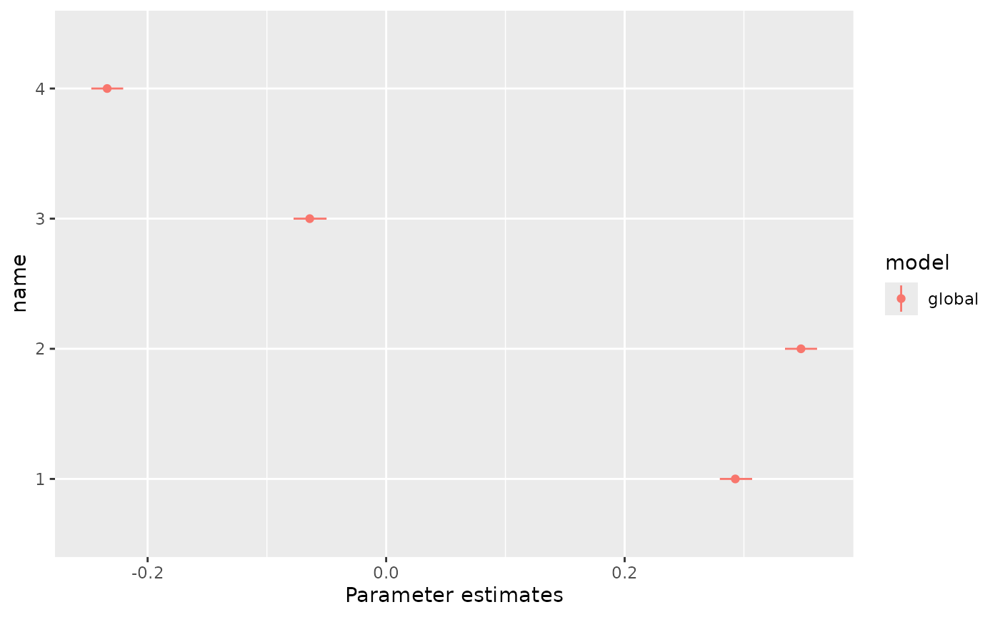
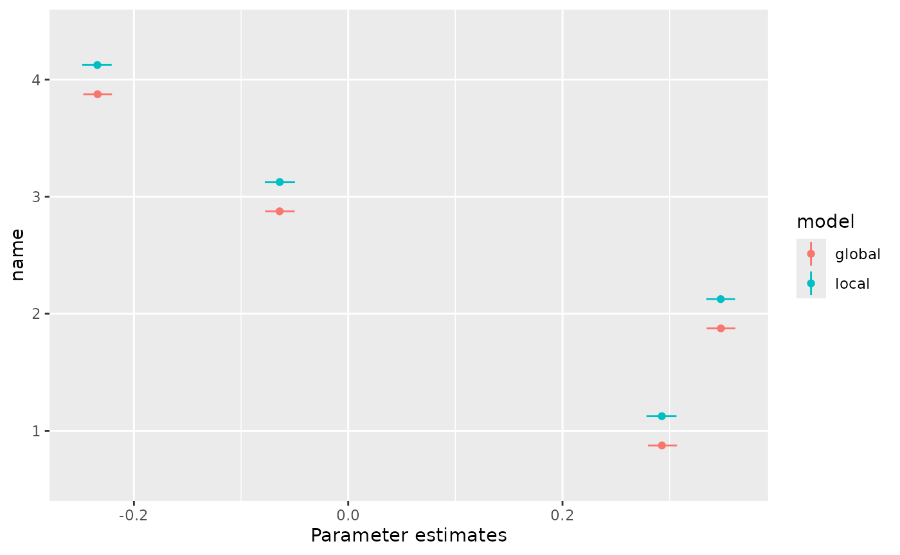
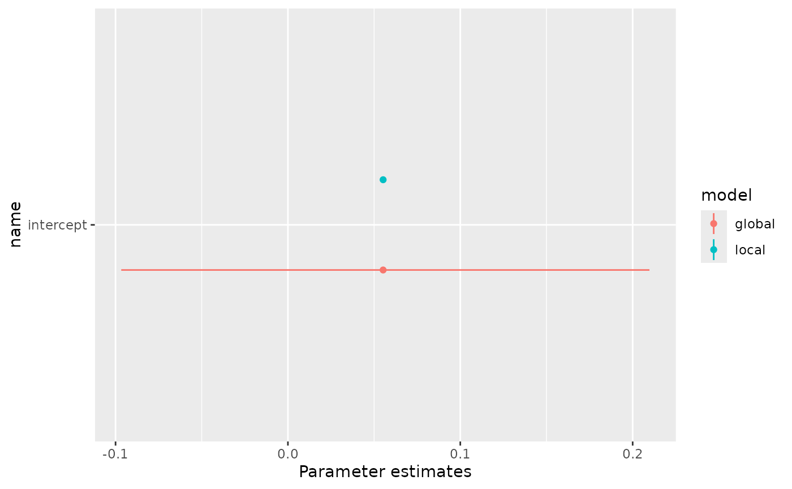
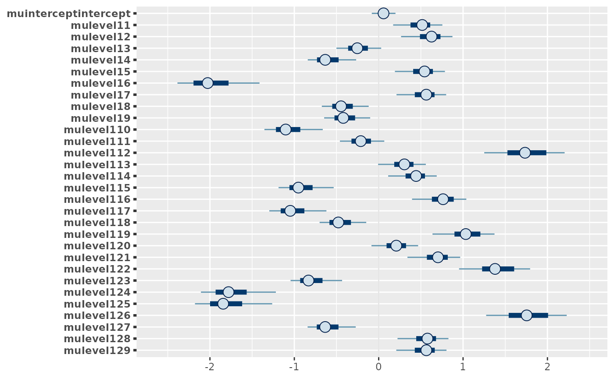
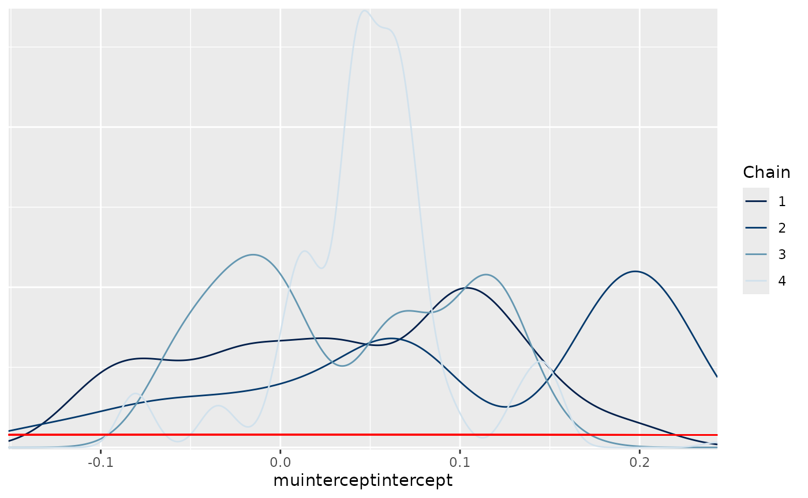
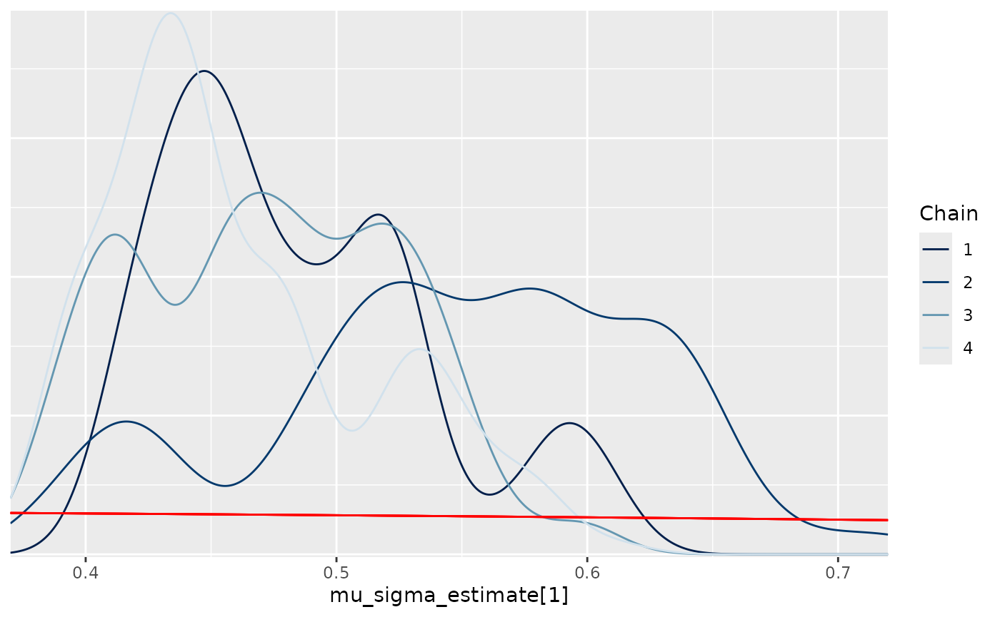

[Article] localhierarchy: an R package to facilitate fitting of global and local Bayesian hierarchical models
Leontine Alkema (lalkema@umass.edu), Shauna Mooney, Evan Ray, and Herbert Susmann
today
Source:vignettes/articles/localhierarchy_article.Rmd
localhierarchy_article.RmdAbstract
Bayesian hierarchical models are widely used in global health estimation, where data availability may vary across national or subnational populations. Such models are typically fitted to a global database, e.g., to produce national-level estimates for all countries in the world or in some region. To facilitate analysis at a local level, models are often desirable that are informed by global models but can be fitted to just a subset of the data, such as data for one country. We refer to such models as local models: models that are derived from global hierarchical models but adapted such that they can be fitted to the data from one population alone.
We present the localhierarchy R package, which
provides functionality for fitting Bayesian hierarchical models in
settings where both global and local estimation is required. The
package provides R functions and Stan model components to support
global modeling, in which all parameters in hierarchical models
are estimated, and local modeling, in which parameters are
estimated for only one or a small number of populations, using
fixed values from a global model fit.
This article presents a practical introduction to the package for the applied user and illustrates the package’s functionality through examples for national estimation.
Introduction
In global health estimation, Bayesian hierarchical models have become a cornerstone methodology, enabling the integration of diverse data sources to produce reliable estimates across multiple populations and regions. For example, they are used to estimate and forecast family planning indicators for the FP2030 initiative (Alkema et al. 2024), incidence of low birth weight (Okwaraji et al. 2024), abortion and unintended pregnancies rates (Bearak et al. 2020), and maternal mortality by the United Nations Interagency Group (Peterson et al. 2024). In these efforts, national or subnational estimates are often required for population-periods with limited data availability. In these contexts, Bayesian hierarchical models -— whether used directly or for specific components within larger modeling frameworks – are valuable because they facilitate the sharing of information across populations. Global modeling exercises typically fit Bayesian hierarchical models to comprehensive global databases, producing national-level estimates for all countries worldwide.
To facilitate analysis of a single population, it is often desirable to use models that are informed by global models but can be fitted to just a subset of the data, such as data from a single country. We refer to these as local models: models derived from global hierarchical models but adapted to be fit using data from only one population. Beyond allowing model fitting to smaller, specific datasets, local models offer practical advantages such as faster computation, making it feasible for users to perform analyses quickly on their own computers. Additionally, local models enable estimates for different populations to be updated independently, for example, when new data become available. This approach has been used successfully in global estimation exercises for family planning and maternal mortality (Alkema et al. 2024; Peterson et al. 2024).
A key challenge in the use of local models in global health estimation is synchronizing codebases and data flows between global and local estimation approaches. Synchronization is important because fitting local models relies on parameter estimates from global models. Therefore, synchronization is necessary to ensure consistency across global and local models. This can be particularly challenging for modeling approaches that involve hierarchical estimation of multiple parameters, where the hierarchical structures may differ across parameters.
This paper introduces the R package designed to address these challenges by supporting the development and fitting of Bayesian hierarchical models in settings requiring both global and local estimation. The package provides R functions and Stan functions and model blocks (Stan Development Team 2025) to facilitate specification of hierarchical models, to fit full global models, and to subsequently fit local models using fixed parameter values inferred from the global analysis. Through this framework, users can conveniently perform local inference informed by global context, streamlining workflows in global health estimation tasks.
This article presents a practical introduction to the package (Alkema et al. 2025) along with illustrative case studies demonstrating its applicability. The article is organized as follows. The next section introduces the modeling approach and workflow used for estimating family planning indicators, motivating the need for the functionality of fitting global and local hierarchical models. The methods section introduces the package’s functionality for the estimation of one parameter at the national level. Finally, we return to the case study of family planning estimation to present illustrative results of the application of the setup in this context.
The Family Planning Estimation Tool (FPET)
To motivate the utility and use of the package, we focus on the Family Planning Estimation Tool (FPET) as an illustrative example (Alkema et al. 2024). FPET is widely used to estimate key family planning indicators in countries and regions. Key indicators include modern contraceptive use, demand for family planning, and demand satisfied, referring to the ratio of modern contraceptive use to demand. Data on such indicators is available from household surveys and routine data systems. FPET estimates are obtained from fitting a Bayesian model to available data. An illustration of FPET estimates and available data is shown in (fig-localfits?) for three countries in Western Africa.

At its core, the Bayesian FPET model employs transition models for demand and demand satisfied to characterize the long-term trajectories of family planning indicators over time within a population (Susmann and Alkema 2025), illustrated in (fig-transition?). The transition model describes changes in an indicator in terms of three principal parameters: the rate of change, the timing of the transition, and the asymptotic level (the maximum attainable level for an indicator). To allow for population-specific variation in how family planning indicators evolve, the parameters of the transition model are population-specific.

Given limited country-specific information on some parameters, Bayesian hierarchical models are used to share information between populations, using hierarchical structures such as the one illustrated in (fig-hierstruc?). Specifically for family planning estimation and forecasting, a hierarchical model is used to estimate the level of demand in a reference year and the asymptote of the transition of demand from low to high values. (fig-level?) shows estimates of the level in the reference year at the country level for countries in Western Africa, and for the groupings used in the hierarchical model. (fig-asympt?) shows estimates for the asymptote. These figures show variation in levels among countries in Western Africa, informed by country-specific data. Estimates of asymptotes are similar across countries in Western Africa because countries have not yet reached the end phase of their transition. The asymptotes of these Western African countries are informed by the estimate of the asymptote in sub-Saharan Africa through the hierarchical model.


The workflow used in FPET to produce country-level estimates is as follows. First, the full Bayesian model is fit to a global data base of survey data. Data base compilation is carried out by the United Nations Population Division (see UNPD world contraceptive use website) and the Track20 project (see www.track20.org). The global model fit provides information on model parameters, including hierarchical parameters, e.g., estimates of asymptotes. Subsequently, a local model can be used to produce FP estimates based on the data from one country, using information from the global model fit. The technical details for this approach are given in the next section. We return to the application of estimating family planning indicators in (sec-fpetnat?).
Methods
The modeling approach introduced in localhierarchy was
motivated by applications like FPET that depend on hierarchical
structures associated with national and subnational level estimation,
requiring global and local models to be fit. In this section, we
introduce the principle setup used for global and local hierarchical
models in the context of national estimation. We use general notation
and a specific example.
Hierarchical model specification
Suppose we want to estimate a population parameter of interest, referring to a population health indicator for region at level of the hierarchy. For example, the indicator could refer to some population health indicator such as service coverage or morbidity or mortality-related outcomes. For a given level , index refers to the population in a particular region indexed by , for example, a subnational region, a country, or a group of countries. We assume that is unconstrained (possibly after a transformation has been applied) and consider the following general hierarchical model setup (see (fig-hiermodel?)):
where is the parameter value at one level higher in the hierarchy for the region that contains unit . The parameter for describes variability of values of the parameter across geographic units at level of the hierarchy. At the top level of the hierarchy, , only a single parameter is estimated.

As a specific example, we consider the estimation of country-specific parameters, where countries are organized into subregions of countries (illustrated in Figure ). In this setting, using alternative notation for the same setup to indicate the level by name, the hierarchical model can be written as follows:
where refers to the country index, to the subregion index of country , and to the region index of subregion . The parameter is the global mean for the parameter of interest, e.g., a global mean for service coverage or mortality. The parameters , , and describe variability in the parameter of interest across countries, subregions, and regions, respectively.
Local hierarchical models
We use the term local hierarchical models to refer to a hierarchical model in which a subset of parameters have been fixed at posterior mean estimates obtained from a fit of the model to a larger data set. A typical workflow for local estimation of national level outcomes is illustrated in (fig-workflow?). For national estimation using the model given by Eq., the user starts by fitting a global model, using a global data base and estimating all parameters in a hierarchical model. In a local model, data from one country are used and parameters that are not country-specific are fixed using parameter estimates from the global model fit.

A local model is derived from a global one by fixing parameters. Continuing with the specific example, an example local model to produce country estimates using data from one country alone has the following setup:
replacing the hierarchical mean and variances by point estimates and , respectively. Details are given in the implementation section.
The localhierachy package provides a general
implementation of local models by facilitating the fixing of subsets of
parameters. Continuing with the general notation introduced above, in
the package, a local model for one parameter of level
is derived by fixing
for
and fixing
for
at posterior means derived from a global fit. More generally, if a model
was fitted using data up to level
,
the user can create a local model by fixing
at all levels
up to some chosen level
.
Similarly, the
parameters can be fixed at all levels
up to a level
.
Implementation
The localhierarchy R package contains R functions and
example Stan model files to fit global and local hierarchical models.
The package is set up to allow for users to incorporate the global-local
hierarchy setup into their own project. For a given parameter and
hierarchical model specification, the package functions enable
processing of data to produce Stan input data for global and local
models, Stan model components that work for both global as well as local
models, and R functions for post-processing of model outputs to check
results and produce summary files of global models for use in local
models.
In a typical work flow, a user first fits a global model, followed by
local ones. A worked example is given in the use case in (sec-nationalusecase?). The
global and local models in these examples are fitted using the
localhierarchy wrapper function
fit_model_localhierarchy, using its arguments to specify a
hierarchical model, data, and, for local fits, the output of the global
model. The wrapper function calls R functions to process data and
prepare Stan input data, read in a Stan model, fit the model, and
post-process the results.
The package includes a user-friendly specification of hierarchical
model structures, and associated specification of fixed parameters for
local runs. A worked example is given in (sec-nationalusecase?).
Briefly, if a user wants to specify a hierarchical model with the levels
world, regions, subregion, and country,
using a dataset with information on these groupings, with naming
region, subregion, and country,
in the R functions, the user can specify the hierarchical model as
follows:
hierarchical_level <- c("intercept", "region", "subregion", "country")The first level is the intercept, which is the global mean, followed
by the region, subregion, and country levels. The user can then specify
a local model for one country by fixing parameters at different levels,
using the hierarchical_sigmas_fixed and
hierarchical_terms_fixed arguments in the
fit_model_localhierarchy function. For example, if the
parameters are to be fixed up to the country level and if the
terms are to be fixed up to the subregion, the user can encode this as
follows:
hierarchical_sigmas_fixed <- c("intercept", "region", "subregion", "country")
hierarchical_terms_fixed <- c("intercept", "region", "subregion")Note that even though there is no
at the intercept level, this term is always included in the
hierarchical_sigmas_fixed vector.
The Stan implementation of the model uses a non-centered parameterization. In general notation, for , a non-centered parameterization refers to writing mean parameters as deviations from higher-level group means: where . Applied sequentially, and if with prior standard deviation , we get where now refers more generally to the index of the unit containing the lower-level group. For the specific example of country parameters, the non-centered parameterization is given by
Implementation is based on a model matrix. For our model given by the equation above, the following matrix multiplication is used to obtain the vector of s: where matrix is a sparse matrix with 1s and 0s, and refers to the vector of the product of the standard deviation terms and terms, i.e., . When estimating a subset of parameters in a local model, the values of s and s are fixed to point estimates (posterior means) from a global fit. For example, for a local national model, we get
Operation
localhierarchy is a publicly available R package stored
on Github. For usage, installation of R (≥4.5.1), Stan (≥2.37.0), and
CmdStanR (≥ 0.9.0) are required (R Core Team
2025; Stan Development Team 2025; Gabry et al. 2025). The
localhierarchy package can be installed from the Github
repository. Package dependencies are listed in the package DESCRIPTION
file and will be automatically installed upon installing the main
package. There are no minimum RAM, CPU, or HARDDRIVE requirements apart
from what is necessary to store model runs, which varies
case-by-case.
Use case: National estimation
We present a detailed use case of the localhierarchy
package using simulated data, followed by an application of that
functionality in FPET.
Detailed example using simulated data
Simulation setup
The simulation setup is as follows: For national level estimation, we
consider countries to be grouped in the world, i.e.,
The likelihood function for national data is given by a normal
likelihood with constant variance:
where
refers to the country of country observation
.
We chose simple normal densities as data generating mechanisms in the
simulation, to focus the modeling on the hierarchical model and the
localhierarchy functionality as opposed to the data model
aspects of modeling. In practice, the data model can be set by the user
to reflect actual data generating mechanisms, for example, by using a
binomial likelihood, considering transformed outcomes, or accounting for
sampling errors for observations that were obtained from a complex
survey design.
Simulated data were generated using the
simulate_multilevel_data function. We simulate a set of
model parameters, setting
,
and
,
creating 30 countries, and national data, using
.
In the simulated data, level1 refers to the country
level. The data sets contain the simulated parameters (eta;
the deviation away from the global mean) and data (y):
dat_nat |> dplyr::select(level1, mu_global, level1_eta, y)## # A tibble: 6,000 × 4
## level1 mu_global level1_eta y
## <fct> <dbl> <dbl> <dbl>
## 1 1 0 0.293 0.179
## 2 1 0 0.293 0.323
## 3 1 0 0.293 0.356
## 4 1 0 0.293 0.279
## 5 1 0 0.293 0.254
## 6 1 0 0.293 0.258
## 7 1 0 0.293 0.479
## 8 1 0 0.293 0.178
## 9 1 0 0.293 0.206
## 10 1 0 0.293 0.190
## # ℹ 5,990 more rowsModel fitting
We can fit global and local models using the
fit_model_localhierarchy wrapper function, as shown later
in this section. We first provide implementation details, using the main
functions of the package and excerpts from the Stan model.
For model fitting, the first step is to specify a hierarchical
structure, using intercept and names included in the survey
data. For national level estimation, level1 is the name
used in the data:
hierarchical_level <- c("intercept", "level1")Input data are processed using the function
get_geo_unit_index_data. This function obtains unique
hierarchical groupings from the input data and assigns an index
c to each unique grouping:
geo_unit_index <- get_geo_unit_index_data(
dat_nat,
hierarchical_levels = hierarchical_level,
area = "level1"
)
geo_unit_index## # A tibble: 30 × 2
## level1 c
## <fct> <int>
## 1 1 1
## 2 2 2
## 3 3 3
## 4 4 4
## 5 5 5
## 6 6 6
## 7 7 7
## 8 8 8
## 9 9 9
## 10 10 10
## # ℹ 20 more rowsThe second step in the processing is to create a hierarchical data
object, using the function hierarchical_data. This function
outputs a list with various components associated with the
parameterization of the hierarchical parameters, used in the Stan model
and for further post-processing:
hier_data <- hierarchical_data(geo_unit_index, hierarchical_level)
names(hier_data)## [1] "model_matrix" "n_terms" "n_re" "re_start" "re_end"Elements include the model matrix and other elements are used to make a link between columns in the model matrix, or equivalently, indices in the vector , and the hierarchical groupings. The model matrix , as introduced in (sec-implementation?), is as follows:
dim(hier_data$model_matrix$matrix)## [1] 30 31
hier_data$model_matrix$matrix[1:10, 1:10]## [,1] [,2] [,3] [,4] [,5] [,6] [,7] [,8] [,9] [,10]
## [1,] 1 1 0 0 0 0 0 0 0 0
## [2,] 1 0 1 0 0 0 0 0 0 0
## [3,] 1 0 0 1 0 0 0 0 0 0
## [4,] 1 0 0 0 1 0 0 0 0 0
## [5,] 1 0 0 0 0 1 0 0 0 0
## [6,] 1 0 0 0 0 0 1 0 0 0
## [7,] 1 0 0 0 0 0 0 1 0 0
## [8,] 1 0 0 0 0 0 0 0 1 0
## [9,] 1 0 0 0 0 0 0 0 0 1
## [10,] 1 0 0 0 0 0 0 0 0 0All of this information is passed to the function
hierarchical_param_stan_data to produce inputs needed in
the Stan model fitting. This function outputs a named list with Stan
input data relevant to the hierarchical setup:
hier_stan_data <- hierarchical_param_stan_data(
param_name = "mu",
param_data = hier_data
)
names(hier_stan_data)## [1] "mu_raw_n_terms" "mu_re_start"
## [3] "mu_re_end" "mu_model_matrix"
## [5] "mu_n_sigma" "mu_raw_n_terms_fixed"
## [7] "mu_raw_n_terms_estimate" "mu_raw_fixed"
## [9] "mu_n_sigma_fixed" "mu_n_sigma_estimate"
## [11] "mu_sigma_fixed"For example, in this setting, we only have to estimate one
,
and no
is fixed, as recorded in the n_sigma_estimate and
n_sigma_fixed elements of the Stan input data:
hier_stan_data$mu_n_sigma_estimate## [1] 1
hier_stan_data$mu_n_sigma_fixed## [1] 0We can use the function fit_model_localhierarchy to fit
the model as specified so far. Details are included in the appendix
((sec-helpfilefitmodel?)). The
argument runstep is used to define the type of model,
setting it to "global_national" results in fitting a model
to all data without fixing any parameters. Other arguments include the
hierarchical level specification, the area, and survey data. When
calling the function, print statements are used to inform the user of
key points related to the model fit:
global_fit <- fit_model_localhierarchy(
runstep = "global_national",
hierarchical_level = hierarchical_level,
area = "level1",
survey_df = dat_nat
)## [1] "We do a global fit."
## [1] "We don't fix anything"
## [1] "Hierarchical levels used for this run:"
## [1] "intercept" "level1"
## [1] "Hierarchical terms fixed:"
## NULL
## [1] "Hierarchical sigmas fixed:"
## NULLWhen doing model fitting, the same Stan model is used for both global and local models. Excerpts from the Stan model are included in Appendix 1.
The global_fit object includes posterior samples and
other metadata about the fit.
names(global_fit)## [1] "stan_data" "geo_unit_index" "y"
## [4] "area" "hierarchical_level" "mu_data"
## [7] "stan_model" "samples" "post_summ"The post_summ object contains posterior means for
relevant model parameters. For example:
global_fit$post_summ |>
dplyr::filter(variable_no_index == "mu_sigma")## # A tibble: 1 × 3
## variable postmean variable_no_index
## <chr> <dbl> <chr>
## 1 mu_sigma[1] 0.492 mu_sigmaA local fit can be estimated by passing on the global fit object to
the wrapper function and including data for countries of interest. Here
we do local runs for all countries, by including the entire data set,
and specify what to fix using the runstep argument:
fit_local <- fit_model_localhierarchy(
runstep = "local_national",
global_fit = global_fit,
area = "level1",
survey_df = dat_nat
)## [1] "We use a global fit, and take selected or all settings from there."
## [1] "For hierarchical terms, we fix things up to the 2nd-lowest level."
## [1] "For sigma terms, we fix up to lowest level."
## [1] "We fix data model parameters."
## [1] "Hierarchical levels used for this run:"
## [1] "intercept" "level1"
## [1] "Hierarchical terms fixed:"
## [1] "intercept"
## [1] "Hierarchical sigmas fixed:"
## [1] "intercept" "level1"When doing a local national run with
runstep = "local_national", the hierarchical levels are
taken from the global fit, and non-country-specific parameters are
fixed. This is indicated in the print statements above. In the wrapper
function, relevant code excerpts for "local_national" runs
are as follows:
hierarchical_level <- global_fit$hierarchical_level
hierarchical_level_terms_fixed <-
hierarchical_level[1:(length(hierarchical_level)-1)]
hierarchical_level_sigmas_fixed <-
hierarchical_level[1:(length(hierarchical_level))]When doing a local fit, the same R functions and Stan model are used as introduced above but Stan input data is updated to fix a subset of parameters. Specifically, when producing Stan input data, the following function call is used:
hier_stan_data_local <- hierarchical_param_stan_data(
param_name = "mu",
param_data = hier_data,
# information to fix parameters
global_fit = global_fit,
hierarchical_terms_fixed = hierarchical_level_terms_fixed,
hierarchical_sigmas_fixed = hierarchical_level_sigmas_fixed
)Above, the arguments hierarchical_terms_fixed and
hierarchical_sigmas_fixed are used to fix the
at the intercept-level and the
s
up to and including the country-level. Indeed, when comparing the
outputs of this function call to the one for a global fit, we find that
the country
is fixed at the value from the global fit:
hier_stan_data_local$mu_n_sigma_fixed## [1] 1
hier_stan_data_local$mu_n_sigma_estimate## [1] 0
hier_stan_data_local$mu_sigma_fixed## [1] 0.4915359In addition to fixing parameters of hierarchical models, other non-country-specific parameters can be fixed as well. In this example, is a global parameter that is fixed at the posterior mean from the global run for use in local runs.
Processing model fits
The package includes several functions to produce and check outputs.
The function posterior_summary_hierparam is used to
summarize posterior draws for hierarchical parameters, to produce
summaries of
at any level of interest. It takes a fitted model object and a parameter
name as input and returns a list with each entry referring one level,
and the results (e.g., estimates for
estimates) for that level. Here we obtain these results for the global
and local model:
res_global <- posterior_summary_hierparam_localhierarchy(
fit = global_fit, parname = "mu")## [1] "Calculating posterior summary for hierarchical parameters"
## [1] "This can take a little while"
res_local <- posterior_summary_hierparam_localhierarchy(
fit = fit_local, parname = "mu")## [1] "Calculating posterior summary for hierarchical parameters"
## [1] "This can take a little while"Example output for the global model is as follows:
res_local$level1## # A tibble: 90 × 3
## name val quant
## <chr> <dbl> <dbl>
## 1 1 0.278 0.025
## 2 1 0.293 0.5
## 3 1 0.306 0.975
## 4 2 0.334 0.025
## 5 2 0.348 0.5
## 6 2 0.361 0.975
## 7 3 -0.0779 0.025
## 8 3 -0.0640 0.5
## 9 3 -0.0497 0.975
## 10 4 -0.248 0.025
## # ℹ 80 more rowsThe column name includes the country names, given by
simple indices in this simulation. The column quant above
refers to posterior means and upper and lower bounds of 95% credible
intervals. We can create plots to show outputs, for example for the
first 4 countries:
plots <- plot_posterior_summaries_localhierarchy(
res = res_global,
modelname1 = "global",
hierarchy_select = "level1",
areas_select = unique(res_local$level1$name)[1:4]
)
plots$level1
By plotting results from global and local models, we can check how estimates compare and how values have been fixed in the local runs. For example, here we see how country estimates compare between global and local models:
plots <- plot_posterior_summaries_localhierarchy(
res = res_local,
modelname1 = "local",
res2 = res_global,
modelname2 = "global",
hierarchy_select = "level1",
areas_select = unique(res_local$level1$name)[1:4]
)
plots$level1
Estimates are similar, as expected.
When visualizing higher levels, we see how parameters were fixed in the local model:
plots <- plot_posterior_summaries_localhierarchy(
res = res_local,
modelname1 = "local",
res2 = res_global,
modelname2 = "global"
)
plots$intercept 
We can also create plots for the
s
(mu_raws):
plots <- plot_muraw_localhierarchy(fit = global_fit, parname = "mu")This gives a list with plots, including summary plots and plots with priors and posteriors. For example, the figures below show the first 30 s, followed by the prior-posterior densities for the first (referring to the intercept).
plots[["summary_plots"]][[1]]
plots[["plots_allmuraw"]][[1]]## Warning: Multiple drawing groups in `geom_function()`
## ℹ Did you use the correct group, colour, or fill aesthetics?
Plots with prior and posterior densities of the s can be produced as well:
plot_prior_post_sigmas_localhierarchy(fit = global_fit, parname = "mu")## Warning: Multiple drawing groups in `geom_function()`
## ℹ Did you use the correct group, colour, or fill aesthetics?
Application: National estimation of family planning indicators using FPET
For family planning estimation, a local model fitting approach was motivated by the need to enable country monitoring and evaluation (M&E) officers to produce estimates for their countries, as part of the Track20 project (Alkema et al. 2024). The Track20 project works to build the capacity of countries to generate and use data to inform their programming, improve impact, and accelerate progress toward their FP goals. One of the pillars of this approach is the cultivation of a network of M&E officers dedicated to increasing the quality and use of FP data. We developed the family planning estimation tool (FPET) as a local version of a global family planning model, for use by the M&E officers.
For local estimation of family planning indicators, the Bayesian
model described in (sec-fpet?) is used.
Specifically, hierarchical models are used for estimation of transition
model parameters. The workflow used for estimating family planning
indicators at the national level is based on model fitting in several
steps, including the estimation of long-term trends in the first step,
the estimation of all model parameters related to modern contraceptive
use in a second step, the addition of information on the use of
traditional methods of contraception in a third step, followed by local
model fitting to produce estimates for all indicators of interest. The
localhierarchy functionality is incorporated in the family
planning modeling code base such that all steps are run with the same
code base, and parameters can be passed from one model fit to another.
Full details on this workflow and model specification are described
elsewhere (Alkema et al. 2024). As an
illustration, (fig-allfits?) shows global and
local fits for modern contraceptive use, demand, and demand satisfied
for selected countries in Western Africa. The global fit in red
corresponds closely to the local fits, shown in green.

{{< pagebreak >}}
Conclusions
Bayesian hierarchical models are widely used in global health
estimation, where data availability may vary across national or
subnational populations. For analysis at a local level, local models are
often of interest, referring to models that are derived from global
hierarchical models but adapted such that they can be fitted to the data
from one population alone. To that end, we introduced the
localhierarchy R package, which provides functionality for
fitting Bayesian hierarchical models in settings where both global and
local estimation is required.
We have used the localhierarchy functionality in
multiple projects. We discussed the estimation of family planning
indicators, for which country M&E officers use the local model to
produce estimates at the national and subnational level. In this area,
M&E officers have successfully used local models to produce national
estimates since 2014. Availability of a local modeling tool has enabled
users to do additional analyses and check sensitivity of estimates to
specific data sources or data quality assumptions. In addition to
fitting the model to survey data, users of the local family planning
model can also incorporate additional data from routine information
systems (e.g., the number of contraceptive commodities supplied at
family planning facilities, see (Mooney et al.
2024)). These use cases illustrate the value of local models to
enable local analysis.
More recently, we have used the localhierarchy approach
and functionality for estimating coverage indicators for the
Countdown to 2030 for Women’s, Children’s and Adolescents’ Health
initiative. This initiative focuses on “tracking progress of
life-saving interventions for Reproductive, Maternal, Newborn, Child and
Adolescent Health and Nutrition” in low- and middle-income countries,
see www.
countdown2030.org. By developing the localhierarchy
package and providing use cases in this paper, we hope that this work
can be useful for other global health modelers, to consider local
modeling in their own work.
Data availability statement
No data are associated with the software tool described in this article.
Software availability
The R package is available at github.com/AlkemaLab/localhierarchy (Alkema et al. 2025). This code is distributed under the MIT License. See the R package’s LICENSE file for details.
Grant information
This work was supported, in whole or in part, by the Gates Foundation (INV-00844 and OPP1192802). Under the grant conditions of the Foundation, a Creative Commons Attribution 4.0 Generic License has already been assigned to the Author Accepted Manuscript version that might arise from this submission.
Appendix
Appendix I: Excerpts from the Stan model
The same Stan model is used for both global and local models. Excerpts are given in this section to explain key components.
The first excerpt starts at the end in terms of model specification
and concerns the specification of the hierarchical parameters
,
using the localhierarchy Stan function
get_mu:
data {
matrix[n_geounit, mu_raw_n_terms] mu_model_matrix;
}
transformed data {
vector[rows(csr_extract_w(mu_model_matrix))] mu_model_matrix_w
= csr_extract_w(mu_model_matrix);
array[size(csr_extract_v(mu_model_matrix))] int mu_model_matrix_v
= csr_extract_v(mu_model_matrix);
array[size(csr_extract_u(mu_model_matrix))] int mu_model_matrix_u
= csr_extract_u(mu_model_matrix);
}
transformed parameters {
vector[n_geounit] mu = get_mu(
mu_star,
mu_raw_n_terms,
n_geounit,
mu_model_matrix_w, mu_model_matrix_v, mu_model_matrix_u);
}Here we use that
,
where matrix
is a sparse matrix with 1s and 0s, and
refers to the vector with products of standard deviation and
terms. The function get_mu calculates the vector of
s
from the vector of
s
(mu_star in the Stan model) and a decomposition of
into different parts
,
,
.
This implementation uses the sparse representation of the model matrix
with Stan functions csr_matrix_times_vector and
crs_extract.
The second Stan model excerpt concerns the specification of the
s
(mu_star). This vector is obtained by multiplying the
parameter vector of
s,
which is referred to as mu_raw in the Stan model by their
respective standard deviation, i.e.,
the parameter vector of stacked
s
(labeled mu_sigma in the Stan model). The model block
contains the prior for the
s
and
s,
given by
where
refers to the prior standard deviation for
,
called prior_sd_sigma_estimate in the Stan model file. The
localhierarchy Stan function get_mu_star is
used to carry out this multiplication to obtain the
s.
The arguments for get_mu_star include prior parameters
,
mu_scalarprior_mean, and
,
mu_scalarprior_sd, which refer to the (rescaled) prior mean
and standard deviation of
,
where
.
Combined with the standard normal prior on
,
the resulting prior on the intercept
is given by:
All prior parameters
()
are added as input data to the Stan model.
To allow for global and local models, additions
_estimate and _fixed are used to allow for
splitting the mu_raw vector into two parts, one for fixed
and one for estimated parameters. Similarly, vector
mu_sigma is also split into two parts, one part for fixed
and one part for estimated parameters. Relevant Stan code is as
follows:
data {
// terms of hierarchical model
int<lower=0> mu_raw_n_terms;
int<lower=0> mu_raw_n_terms_fixed;
int<lower=0> mu_raw_n_terms_estimate;
int<lower=0> mu_n_sigma;
int<lower=0> mu_n_sigma_fixed;
int<lower=0> mu_n_sigma_estimate;
array[mu_n_sigma + 1] int<lower=1, upper=mu_raw_n_terms> mu_re_start;
array[mu_n_sigma + 1] int<lower=1, upper=mu_raw_n_terms> mu_re_end;
// values of fixed parameters
vector[mu_raw_n_terms_fixed] mu_raw_fixed;
vector<lower=verysmallnumber>[mu_n_sigma_fixed] mu_sigma_fixed;
// prior parameters
real<lower = verysmallnumber> mu_scalarprior_sd;
real mu_scalarprior_mean;
real<lower = verysmallnumber> mu_prior_sd_sigma_estimate;
}
parameters {
vector[mu_raw_n_terms_estimate] mu_raw_estimate;
vector<lower=verysmallnumber>[mu_n_sigma_estimate] mu_sigma_estimate;
}
transformed parameters {
vector[mu_raw_n_terms] mu_star = get_mu_star(
mu_n_sigma, mu_n_sigma_fixed, mu_n_sigma_estimate,
mu_sigma_fixed, mu_sigma_estimate,
mu_scalarprior_mean,
mu_scalarprior_sd,
mu_raw_n_terms, mu_raw_n_terms_fixed, mu_raw_n_terms_estimate,
mu_raw_fixed, mu_raw_estimate,
mu_re_start, mu_re_end);
}
model {
to_vector(mu_raw_estimate) ~ std_normal();
to_vector(mu_sigma_estimate) ~ normal(0, mu_prior_sd_sigma_estimate);
}Appendix II: Documentation of the
fit_model_localhierarchy function
| Argument | Description |
|---|---|
survey_df |
Tibble with survey data |
y |
Column name of outcome, defaults to
y. |
area |
Column name of the area of each observation (used as geounit; iso or subnational region) |
area_select |
Area name to use for local run (e.g., iso code or subnational region name) |
runstep |
Type of run, defines which model fitting step to perform (see Details for options). |
global_fit |
Optional global fit object, used to obtain fixed values for some parameters in the current fit (see Details). |
hierarchical_level |
Vector specifying hierarchical structure used for mu. Should list
elements in hierarchical order from intercept downward (see
Details for examples). |
add_subnational_hierarchy |
Level that’s added to the hierarchy for subnational analysis,
defaults to subnat. |
use_globalsubnat_fromnat |
Logical; for local subnational runs, whether to use the global fit
derived from national data (requires
fit_globalsubnat_fromnat in
global_fit if TRUE). |
mu_isvector |
Logical, TRUE if mu is a vector, defaults to FALSE |
chains |
Number of chains to run (sampling parameter) |
iter_sampling |
Number of posterior samples to draw (sampling parameter) |
iter_warmup |
Number of warmup iterations (sampling parameter) |
compile_model |
Boolean indicator of whether to compile the Stan model |
force_recompile |
Boolean indicator of whether to force recompilation of the Stan model |
seed |
Random seed |
refresh |
Number of iterations between progress updates |
adapt_delta |
Target acceptance rate for the No-U-Turn Sampler |
max_treedepth |
Maximum tree depth for the No-U-Turn Sampler |
Details
The fit_model_localhierarchy function fits the toy
example for hierarchical models/seq fitting. The argument
runstep determines the type of run to perform. The
following run steps are supported:
“global_national”: Fit the global model.
“local_national”: Fit the model to data from a single country, using a global_national fit.
“global_subnational”: Fit the model to global database with subnational data, using a global_national fit.
“local_subnational”: Fit the model to subnational data from a single country or region, using a global_subnational fit. This is also explained in the documentation folder.
Details on hierarchical set ups used The package allows the structure
of the hierarchical prior to be configured by the user through the
hierarchical_level argument. These arguments expect a
character vector that specifies a nesting hierarchical structure. Each
element of the vector must be either “intercept” or a column name in the
survey dataset, where “intercept” will add a global intercept for the
parameter. The vector must be in descending order in terms of the
hierarchy: that is, it starts with “intercept” and proceeds down the
hierarchy.
For example, suppose we are fitting country-level data, where the
dataset has columns “name_country”, “name_sub_region”, and “name_region”
containing the name of the country, sub-region, and region that each
observation belongs to. To specify that parameter mu should be fitted
with a hierarchical model in which countries are nested within
sub-regions within regions within world, we would use the argument
hierarchical_level = c("intercept", "name_region", "name_sub_region", "name_country").
Optionally, model parameters can be fixed to values from a previous
model fit provided via the global_fit argument. In a
typical use case, the global_fit will have been fit to data
from many geographic units (e.g., all countries), while the current fit
uses data from a smaller number of locations. When using a global_fit to
fix parameter values, what exactly is fixed is determined by the runstep
and global_fit combi. see options in function
Value
List that contains samples, stan_data, other information relevant to model fit (arguments), and for global fits, point estimates of relevant parameters (post_summ). For subnational global fits, the list includes fit_globalsubnat_fromnat, which is the global fit with additional subnational sigmas added to the postsum object.